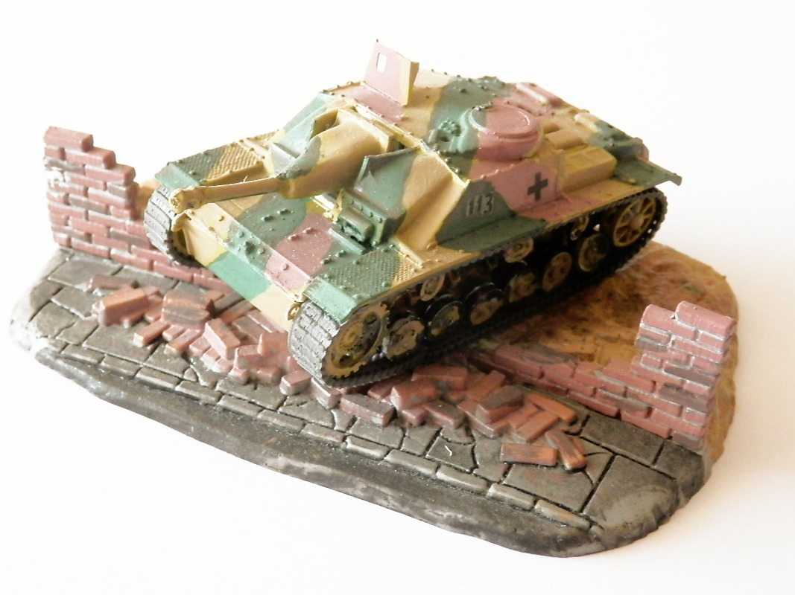
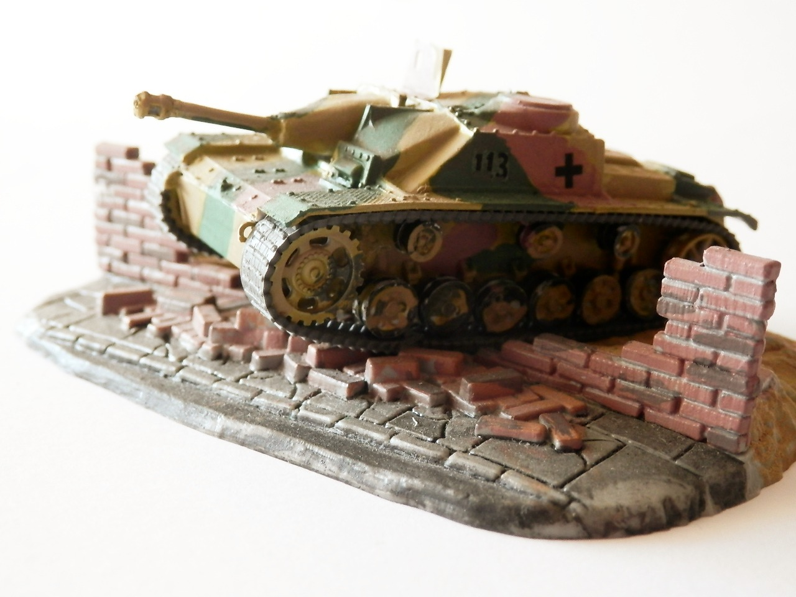
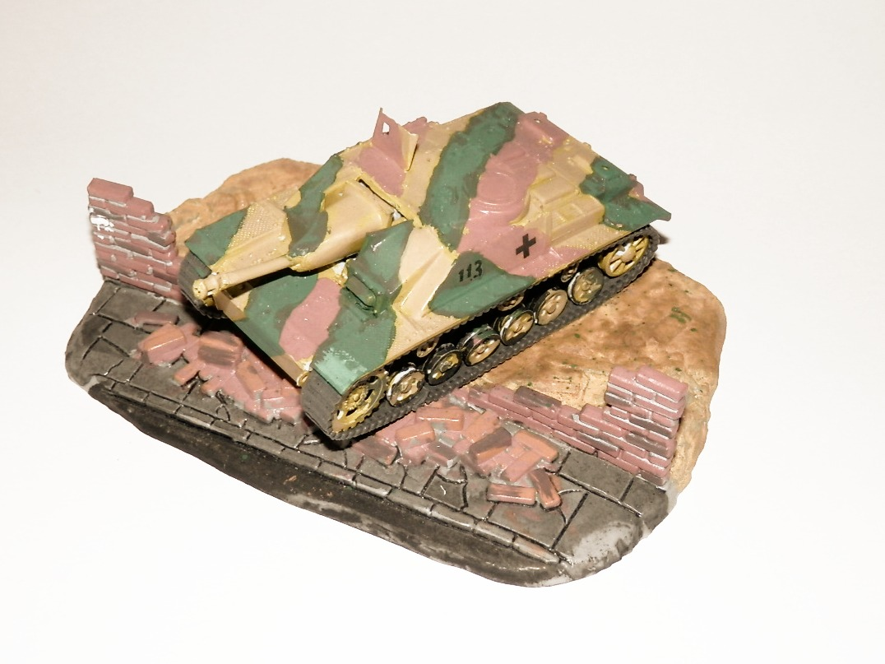

Mezzi militari · scale model archive
Sturmgeschütz III with 105mm gun
Sturmgeschütz III with 105mm gun — Kit: Revell, Scale: 1/72. A former Matchbox kit, with cute diorama elements

Photo gallery


English description
A former Matchbox kit, with cute diorama elements
Descrizione italiana
Un ex kit Matchbox, con graziosi elementi di diorama.